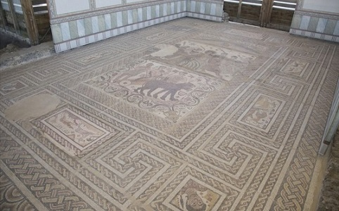
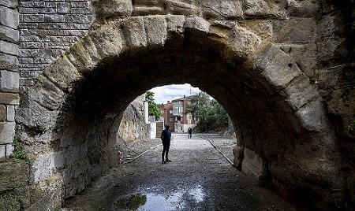

|
BURGOS ROMANO
De los restos hallados en la provincia de Burgos destacamos: - Las Ruinas romanas de Clunia en la localidad de Peñalba de Castro. - La Villa romana de Santa Cruz localizada en Baños de Valdearados. En la villa destacan varios mosaicos del siglo IV, entre ellos uno dedicado al dios Baco. Foto: www.bañosdevaldearados.es
 - La Villa romana de Los Casarejos en la localidad de San Martín de Losa. Apareció un gran mosaico, sobre el hipocaustum, decorado con temas geométricos y figurados. Datada en la segunda mitad del siglo IV. - En el yacimiento romano de Ciella en Valdeande, han aparecido restos de época romana, hispano-visigoda y una necrópolis de la Edad Media. - En Villatuelda destaca el puente y la fuente de época romana, datados en el siglo I. - En Miranda de Ebro, se localiza el yacimiento de Arce Mirapérez, la Autrigona celta y la Deóbriga romana. El núcleo se halla junto a la calzada romana de Ab Asturica Burdigalam (Astroga-Buerdeos). Tuvo su esplendor en los siglos I y II. - En Villahizán de Treviño, localidad a 8 kilómetros de Villadiego, en el lugar que se conocen como Las Hazas, hay una importante villa del tardoimperial. - En el término San Felices se descubrió una necrópolis en el que se hallaron broches y hebillas de bronce, en superficie cerámica medieval. - En Buniel se ha hallado una de las necrópolis romanas mejor conservadas de Burgos. - En Amaya, Amaia, podemos observar la trinchera de acceso al castro, de época prerromana, así como una de las murallas defensivas. De esta época se han realizado varias catas arqueológicas. - Los puentes romanos de Coruña del Conde. - En Cardeñajimeno destaca la antigua villa romana y su conjunto de mosaicos. - En Quintanapalla la calzada romana, con un tramo de casi 6 km de la Vía de Italia. - El yacimiento romano de Salinas de Rosío, con los restos de una villa romana con una habitación con un mosaico en blanco y negro. - El aula arqueológica de Roa. - La calzada romana de Caleruega. - En Sasamón, Segisama Iulia, se conservan dos puentes de origen romano sobre el río Brullés y la calzada romana que unía Zaragoza (Cesar Augusta) y Astorga (Asturica Augusta), de la que quedan algunos restos en las afueras del pueblo. - En Tordómar destaca la encrucijada de calzadas, con sus tres miliarios. Destaca el del emperador Trajano, el grande. El puente de 22 arcos que cruza el río Arlanza. Ha sido restaurado en diversas ocasiones, aún son visibles los arcos de medio punto y los tajamares romanos dispuestos con amplias dovelas y grandes sillares unidos a hueso.
- En Cerezo de Río Tirón destaca el puente romano y la Ruta de la Calzada Romana "De Italia in Hispania". En enero de2024, se denuncia que las humedades siguen arruinando esta construcción romana, que es junto al de San García, también en Cerezo, el único viaducto realmente romano de Burgos, ubicado en la Vía Italia in Hispania. Foto: diariodeburgos.es
 - En Huérmeces se localiza el yacimiento romano de Vegas Negras, una villa romana. - En mayo de 2021, en el municipio de Poza de la Sal, llama la atención el insospechado tamaño de la urbe romana de Flaviaugusta. Los informes arqueológicos detallan la existencia de viviendas, calles, necrópolis, plazas, muros y edificios públicos.
|